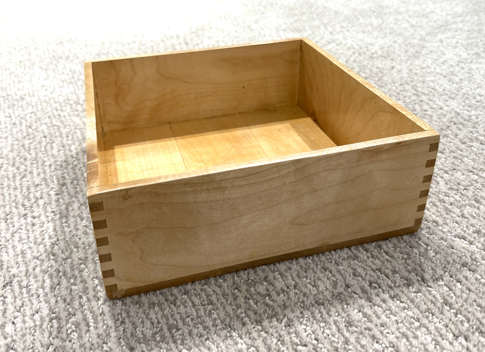

During my Grade 12 shop class, I undertook a semester-long project to design and manufacture a metal mallet using a manual lathe. Lacking prior experience with metal lathes and without access to expert guidance, my partner and I independently researched machining techniques and gradually developed our skills using scrap material.
One significant challenge involved balancing design complexity with manufacturability, which prompted us to simplify a complex fillet into a more repeatable taper.
I now recognize that selecting a simpler design earlier and allowing for larger error margins would have been advantageous given the time constraints.
What I Learned
- Manual lathe operation from scratch, self-taught
- Balancing design complexity with manufacturability
- Importance of error margins in precision machining
- Iterating on design to improve repeatability

A box built primarily on the table saw from maple lumber. This project was my first experience using Dado stack blades — throughout the build I was switching table saw blades and creating blade stacks of custom thickness.
The finger lap joints required precise, repeatable cuts. Learning to double-check measurements and factor in machine error was central to getting clean-fitting joints.
Every cut on the table saw is a commitment — measuring twice became second nature by the end of this project.
What I Learned
- Dado stack blade setup and custom thickness stacking
- Double-checking measurements before each cut
- Factoring in machine error — kerf and blade deflection
- Patience and precision in joinery